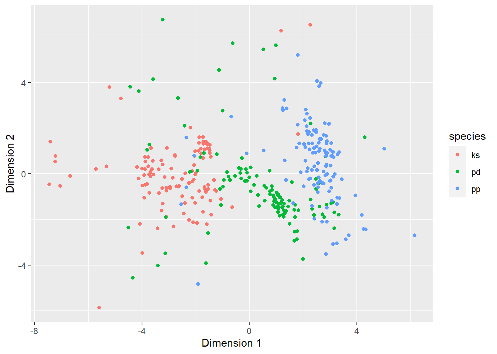
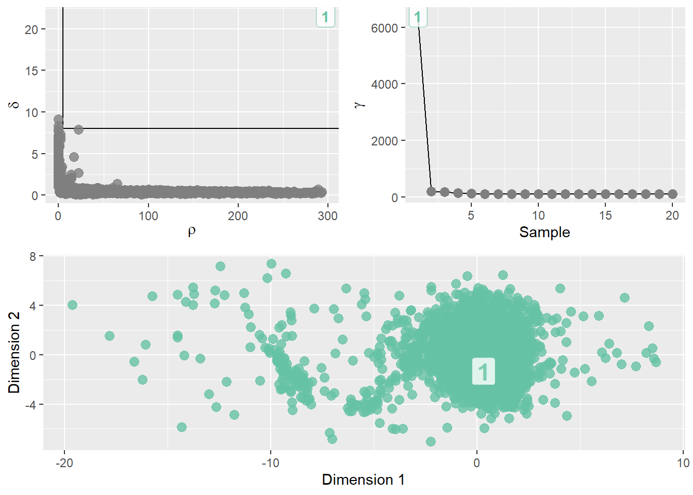
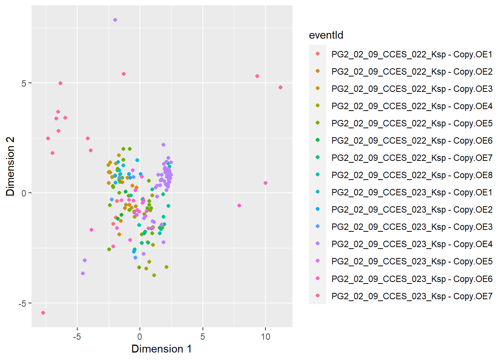
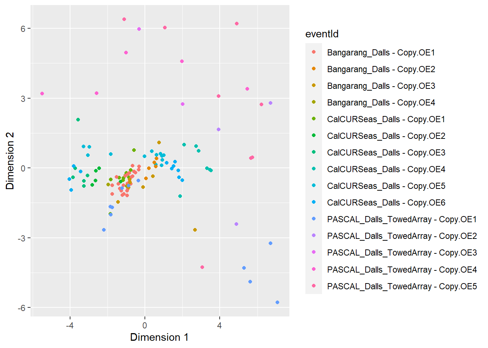
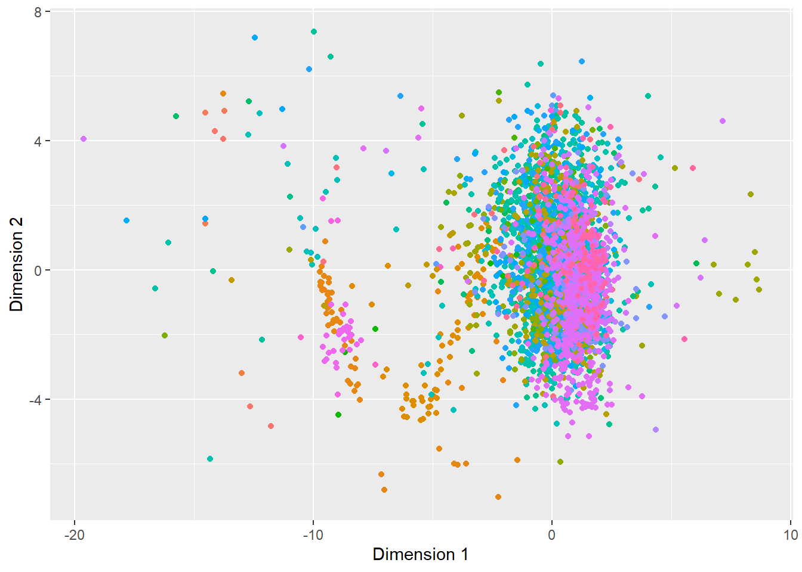

We want to identify clusters within our training set before we make our classifier learn from it. There are two objectives for unsupervised clustering:
Look across species to identify whether species classes form separate clusters (Section 1).
The existence of clusters suggests that there are meaningful differences between classes that the classifier can be trained to recognize.
Look within species classes to assess variability among events (Section 2).
The existence of clusters within an individual species class may indicate that there are outlying events with anomalous features that should be excluded from the training set.
Select 200 clicks at random from each species to reduce computational burden
2
Drop metadata
3
Drop variables such as peaktopeak2, trough, and others to avoid creating artifacts in the cluster plot.
4
Calculate Euclidean distances
5
Select value of \(\delta\) and \(\rho\). This affects how many clusters into which the data will be partitioned.
Using the above method, the density clustering algorithm formed the clusters shown in Figure 1. The counts of each species in each of the resulting clusters is given in Table 1. The MDS plot is shown with the points colored by species in Figure 2.
Figure 1: Density clusters with Four clusters formed with ρ=25 and δ=2
Table 1: Table of cluster assignments
1 2 3 4
ks 2 4 3 191
pd 170 10 0 20
pp 59 137 0 4

Figure 2: MDS plot showing distances between clicks in the training set, colored by species
Discussion
For all species, we see that clicks cluster predominately in a single cluster, with little overlap between different species classes.
The MDS plot similarly shows that clicks separate from one another on the basis of species class.
From Table 1 we see that cluster 3 is very small, containing just three Kogia clicks.
Table 2 shows that the entirety of cluster 3 is formed from a few anomalous clicks in Kogia event identified as PG2_02_09_CCES_023_Ksp - Copy.OE4.
That same event, which happens to be the largest Kogia event in the entire training set, has the overwhelming majority of it’s clicks in cluster 4.
Table 2: Table of cluster assignments for all Kogia events
For events with \(n\) greater than the median, slice a sample in size equal to the median. Since event sizes could vary across several orders of magnitude, this was thought to help reduce over representation of certain events in the cluster plots.
3
Select variables of interest, same as in Section 1.
4
Subset data by species class
5
Create distance matrices.
6
Perform density clustering. Static values chosen for \(\rho\) and \(\delta\). This decision does not seem to be critical, because the algorithm strongly favors a single cluster for each species.
Figure 3 shows the resulting density cluster plots and Figure 4 shows the plots with the points colored by event.
(a) Kogia
(b) Dall’s porpoise

(c) Harbor porpoise
Figure 3: Click clusters for each species class

(a) Kogia

(b) Dall’s porpoise

(c) Harbor porpoise
Figure 4: MDS plot showing distances between clicks, colored by event. Legend is hidden due to large number of events in each species class.
Discussion
The density clustering algorithm appears to strongly favors a single cluster in each species, suggesting that there are no outlying events.
When points are colored by event, variation among events is more evident. This variation does not appear to be strong enough to manifest as more than one density-based cluster.